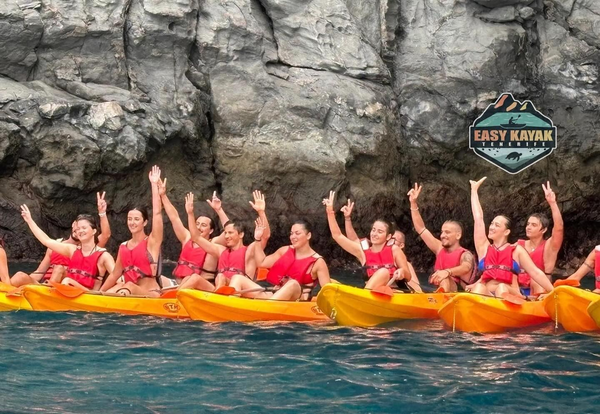
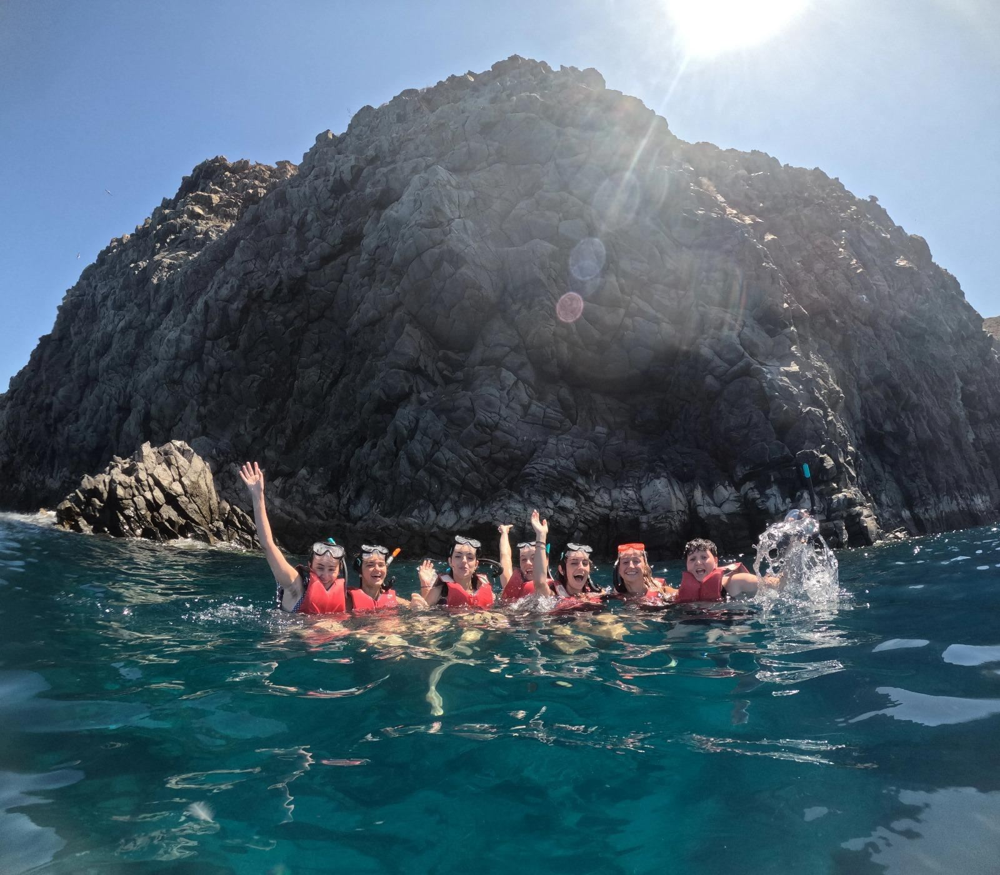
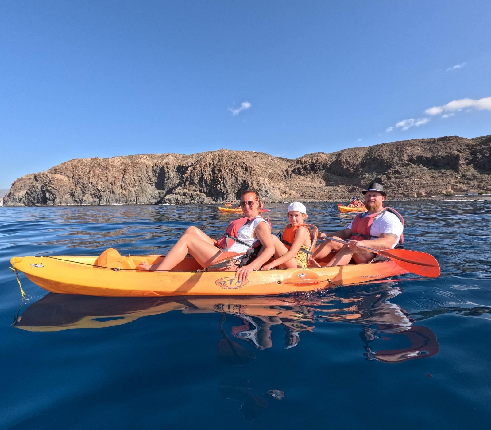
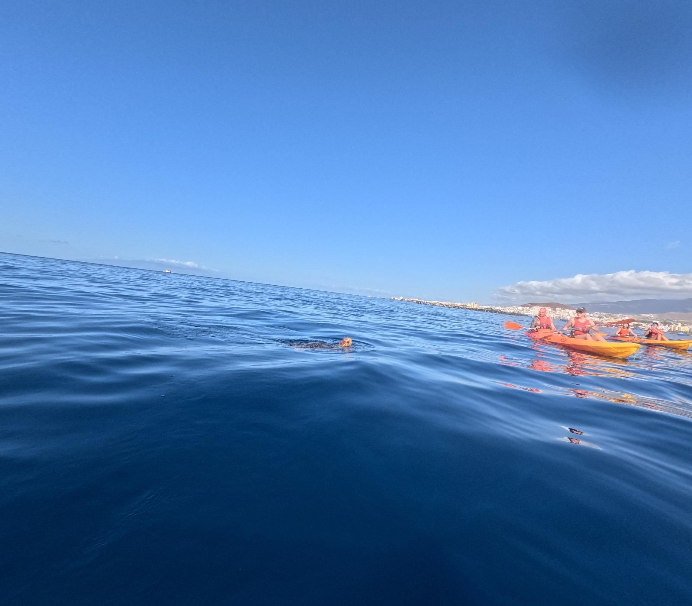
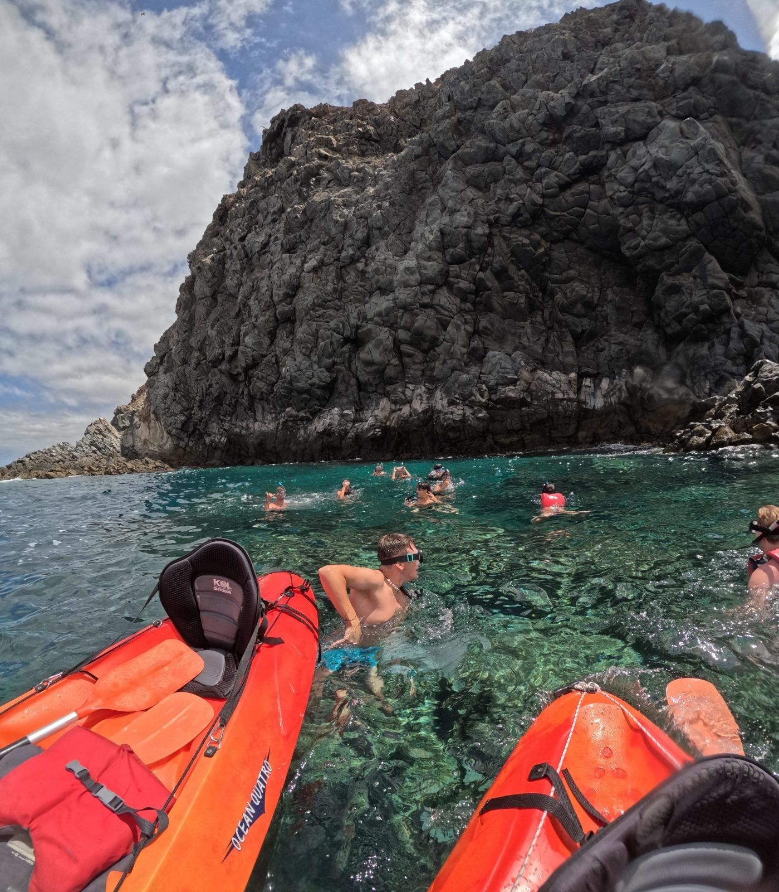
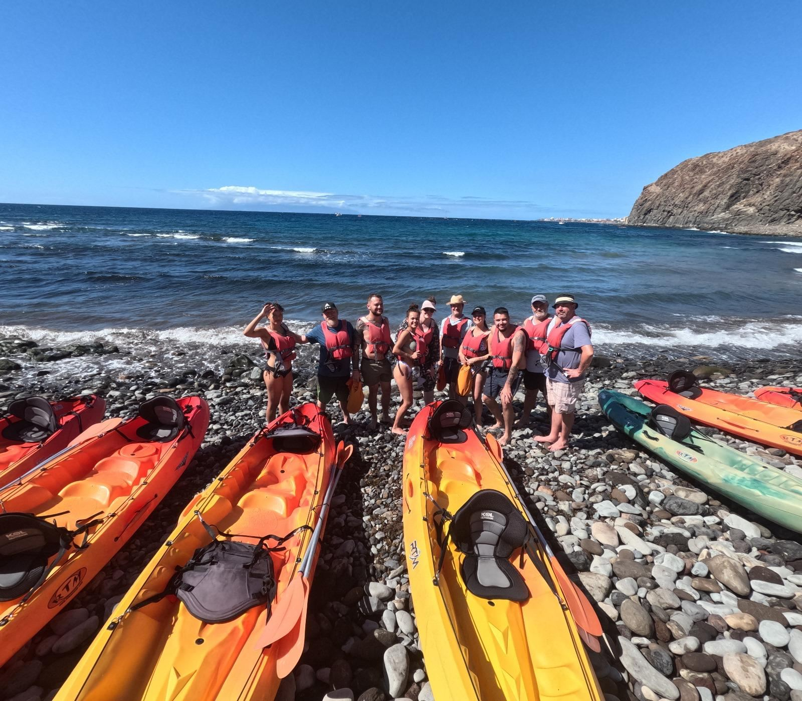
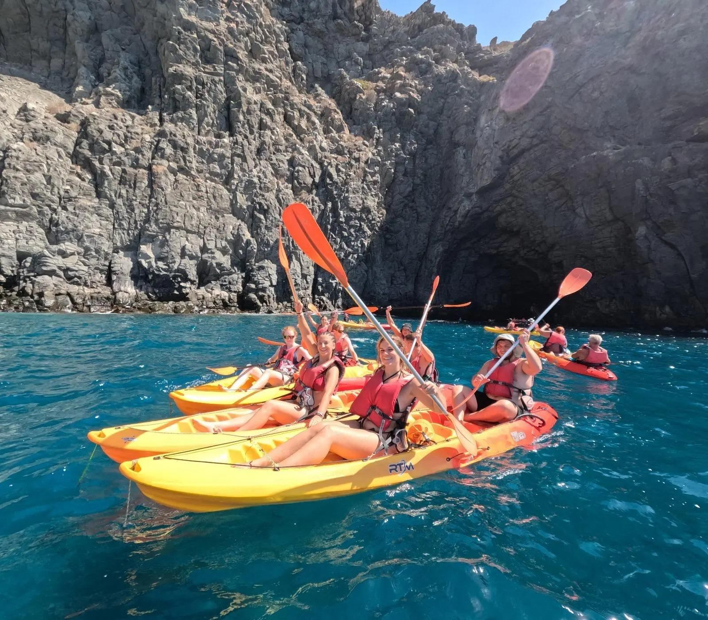
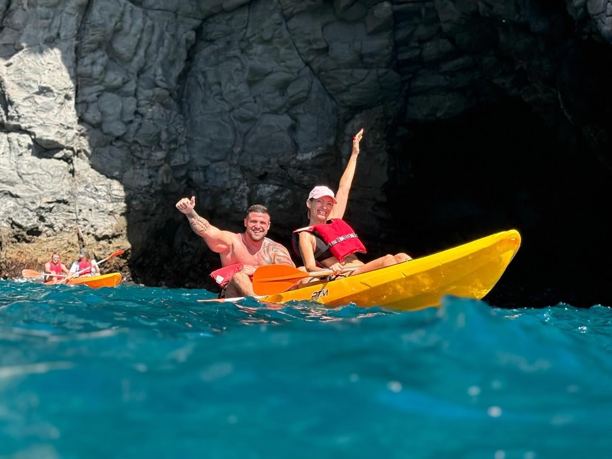

Galleria



















Natura, mare e avventura allo stato puro. Scopri il lato più autentico e selvaggio del sud di Tenerife con un'esperienza di kayak e snorkeling in una delle zone costiere meglio conservate dell'isola: Playa La Arenita, a Palm-Mar.
Un piccolo rifugio naturale lontano dal turismo di massa, dove l'Atlantico incontra paesaggi vulcanici intatti. Pagaiando navigherai di fronte all'imponente Montaña de Guaza, un antico vulcano che protegge questa costa creando un ecosistema marino ricco e sorprendente. Non è raro incontrare tartarughe marine e pesci colorati.
2 ore di avventura guidata in mare: pagaiata dolce lungo la costa, sosta per fare snorkel in acque aperte e osservazione della vita marina.
Kayak ed equipaggiamento completo, maschera e tubo da snorkel, muta in neoprene, dry bag, snack e acqua. Opzione tour privato su richiesta.
Attività adatta a tutti — famiglie, coppie, gruppi e bambini dai 3 ai 12 anni. Non serve esperienza precedente.
Peso massimo per kayak: 200 kg. Al termine puoi vedere e acquistare le foto professionali scattate durante il tour.
Dimmi quando e quanti siete. Ti rispondo con orari e disponibilità.
💬 Contattaci su WhatsApp